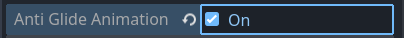

Character Anti-Glide Feature
Usually, when a character walks, its walking animation is played. The movement of the character though, is totally unrelated from the walking animation being played. It has to do instead with the character's being progressively repositioned by the engine, as it renders frames.
Being unrelated, making character movement and its walk animation play well together isn't always easy.
One of the most annoying effects while watching walking cycles is the feeling of character gliding, or "moonwalking" over the stage.
This usually depends on the character's speed being even slightly out of sync with the animation.
Under the hood
More specifically, this artifact is visible when the character's walking cycle frame rate is significantly lower than the game's frame rate, and the distance traveled by the character between two frames is larger than a single pixel.
In high-resolution games with walk animations with lots of frames, it almost goes unnoticed. Low-resolution / pixel-art games usually suffer from this effect way more.
Popochiu can eliminate this annoying artifact, by restricting the repositioning of the character only when the the walk animation plays a new frame. The character's movement will be less "smooth", but unless the animation is very slow in proportion to the sprite size, it will look way better on screen.
Activating anti-glide feature
It's as simple as checking the Anti Glide Animation property in the inspector.

You can turn it on and off on a per-character basis. This may be useful for those characters that actually have to glide (ghosts, will-o-whisps, etc) or to slide.
Known issues and limitations
If a character has a single-frame animation for walking, or if it has no animation at all, activating the anti-glide feature will make the character "teleport" to the end of its path in a time proportional to the distance.